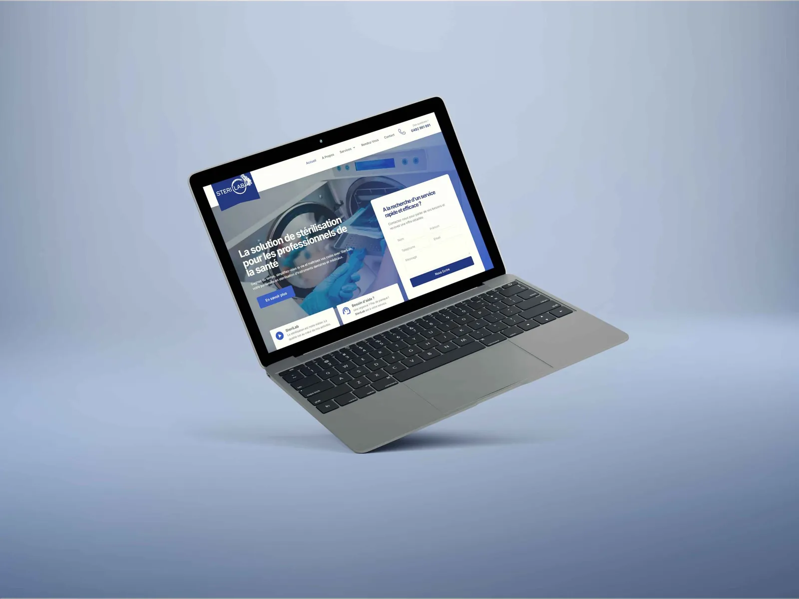

Project 25 / Sterilization Service
SteriLab
Website design & development
- Year
- 2024
- Category
- Sterilization Service

Project overview
SteriLab is a premier provider of sterilization services for dental and medical instruments, dedicated to offering healthcare professionals a streamlined, efficient, and cost-effective solution for maintaining instrument hygiene. The website is designed to highlight SteriLab’s comprehensive sterilization process, which includes sorting, pre-washing, washing, disinfection, control, packaging, and traceability in accordance with current…
Role on the project
As the web developer and designer for SteriLab, I was responsible for creating a clear, user-friendly website that effectively communicates the company’s sterilization solutions. My role involved designing the site to showcase the full range of services, including detailed explanations of each step in the sterilization process. I ensured the website was optimized for both functionality and aesthetics, providing a seamless user experience while highlighting SteriLab’s commitment to compliance and efficiency in…